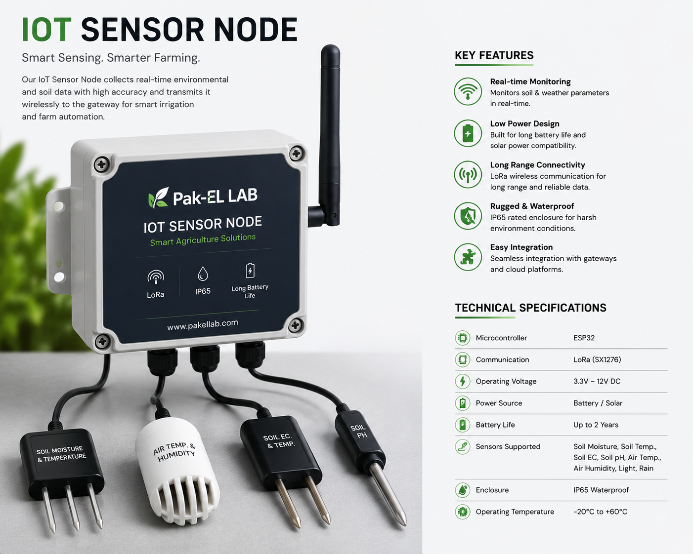
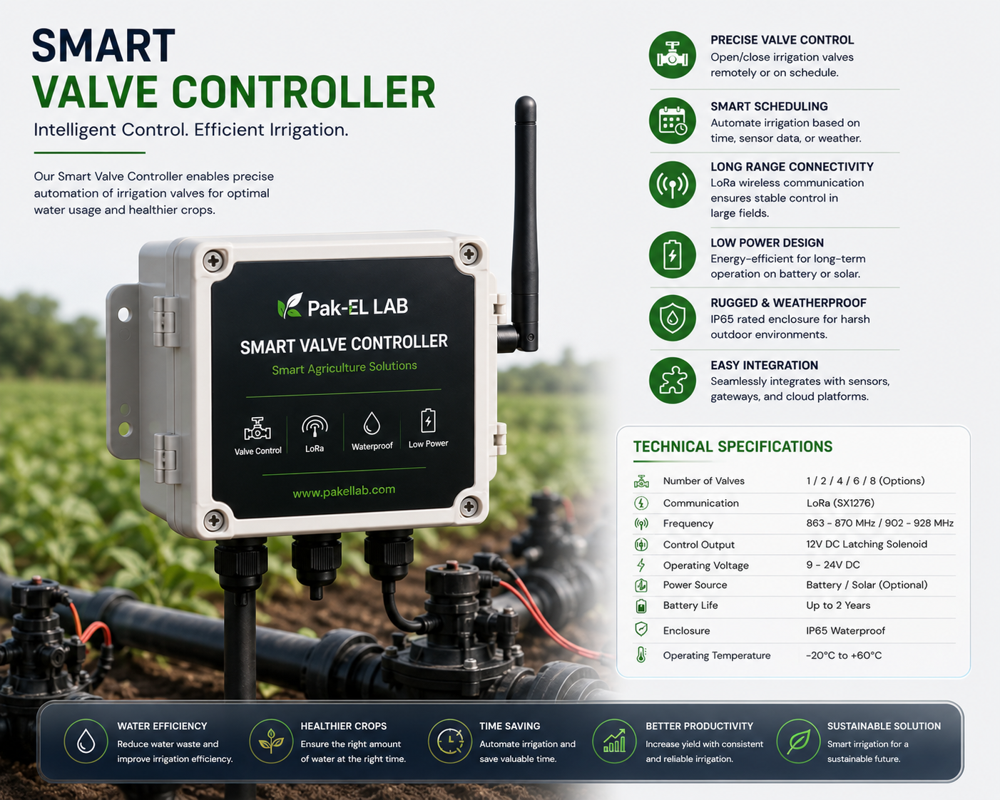
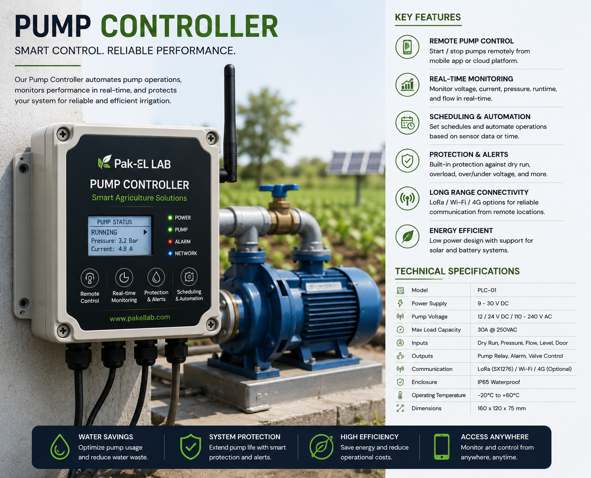
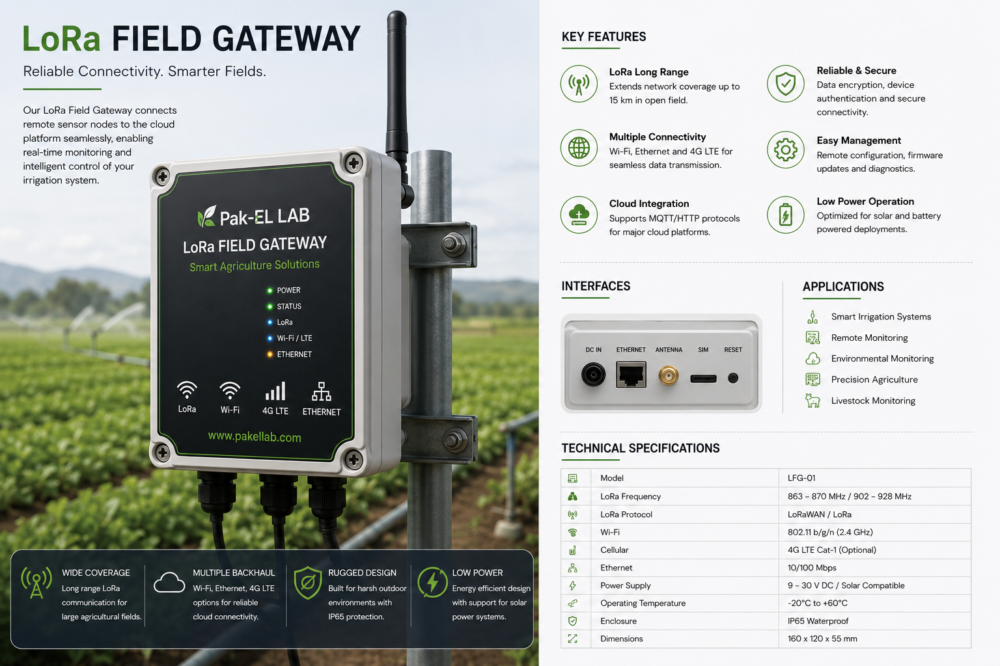

Real-time soil monitoring for commercial irrigation.
IrrigTech hardware measures soil moisture, nutrient levels, and pump/valve status continuously, and reports it to a dashboard your team can act on.
Figures from IrrigTech's 2025–26 pilot program, 6 farms across mixed vegetable and grain operations.
From soil to decision
Sense
Buried nodes read moisture, NPK, pH and temperature every few minutes, all season, without anyone walking the field.
Send
Readings hop over LoRa to a gateway, then up to your dashboard — no WiFi needed at the sensor.
Decide
Thresholds you set per crop flag what's drifting, before it shows up as a visible problem in the plant.
Act
Get an alert on your phone, or let the dosing controller open the right valve automatically.
Five devices, one system
Each one does a specific job in the field — sense, act, or connect.

IoT Sensor Node
Multi-probe hub reading soil moisture, EC, pH, and air temperature/humidity.
Spec sheet →
Soil Moisture Sensor
A dedicated, lower-cost probe for placing many points across one field.
Spec sheet →
Smart Valve Controller
Opens and closes irrigation valves the moment a threshold is crossed.
Spec sheet →
Pump Controller
Starts, stops, and protects your pump with built-in dry-run and overload alerts.
Spec sheet →
Field Gateway
Collects every node on the farm and pushes it to your dashboard over 4G or WiFi.
Spec sheet →"We caught a phosphorus drop in the north block three weeks before we would have seen it in the plant. That block outyielded the rest of the farm this season."— Pilot grower, 40-hectare mixed vegetable farm